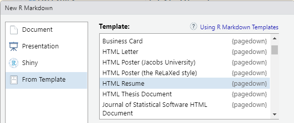

Many fantastic things can be done in R. A beautiful resume or CV can leave a good impression of you to others. People usually make their resume or CV in word. HTML is also an extraordinary typesetting tool, which is one of the motivations Yihui created a series packages about html. Don’t worry if you don’t know much about HTML or CSS. You are able to write a beautiful resume or CV in R easily.
pagedown package.remotes::install_github('rstudio/pagedown')
A simple resume is completed by this way. Isn’t it?
You may want to modify the icon, color, font or any other details. For the icon, for example, you’ like another icon to replace the suitcase icon .
The original code is {data-icon=suitcase}. All you need to do is to search a new icon in fontawesome and paste its name like {data-icon=user-circle}. Then it displays as .
If you want to change the font size, color etc, you may know a little css.
The book pagedown: Create Paged HTML Documents for Printing from R Markdown has a simple explain on css in Chapter 2.2. You need to change your css file.
Simply, first, add or change css file in the yaml. Second, define your class. Third, use the new class in your document.
We need a pdf version in many occasion. So you should delete the # in front of #knit: pagedown::chrome_print. Then you will knit a pdf file.
Sometimes it fails because R can not find the chrome. If so, run this line in your R console.
Sys.setenv(PAGEDOWN_CHROME = "url")url is the position of your chrome.exe.
My resume can be found here.
Another idea is to generate the content via table, which can have a tidy output through kable.
I created a project to write personal CV, especially the template is for phd application. But you can download and costume it as your own purpose.
You can manage your own data and update the CV easily. And the css document is more clear so that you can change it more continently.